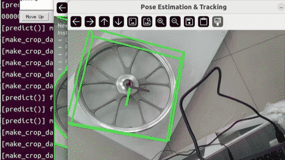
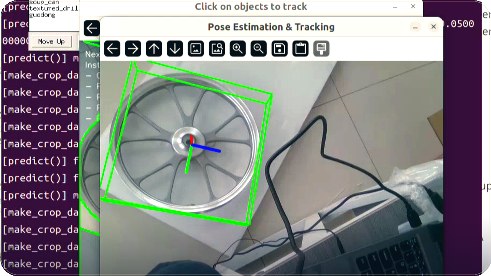

← 返回作品
Project
6D 姿态估计


循环画面是深度学习版封面的缓慢推移，不是量化演示。两条原片都在 Bilibili。
问题
同一天的两条视频都在做物体的 6D 姿态估计：一个深度学习版，一个传统计算机视觉版。帖子没有写评测集，也没有写目标精度。
方法
深度学习版（BV1unBNBZEmL）：相机是 RealSense D415，用 FoundationPose 的 ROS 2 版本。CAD 用腾讯混元建模，再用建模工具微调。
传统版（BV1XoBNBAEbE，同一天稍早）：相机是奥比中光 Gemini 335。方法是特征点匹配，加上深度法向量。
2026-01-07 还有一条相关视频，标题是「6D姿态视觉定位+Moveit2规划」。简介只写了系统为 Ubuntu 22.04、ROS 2 Humble。
结果
两条简介都没有给出误差或成功率。这个页面也不补数字。公开出来的结果就是那两条录像。